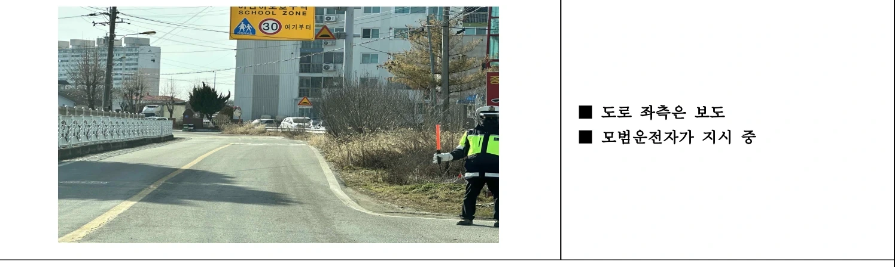

757. 다음과 같은 상황에서 운전자나 동승자가 범칙금 또는 과태료 부과처분을 받지 않는 행위 2가지는?

- ①승용차는 미리 시속 30 킬로미터 이내로 감속한다.
- ②시동을 끈 이륜차를 끌고 보도로 통행하였다.
- ③개인형 이동장치 운전자가 모범운전자의 지시에 따르지 아니하였다.
- ④승용차 운전자가 어린이 보호구역에 주차하였다.
- ⑤보호자가 지켜보는 가운데 안전모를 쓰지 않은 어린이가 자전거를 타고 보도를 통행하였다.
정답 보기
정답
① 승용차는 미리 시속 30 킬로미터 이내로 감속한다.
② 시동을 끈 이륜차를 끌고 보도로 통행하였다.
근거·해설
이륜자동차, 원동기장치자전거 또는 자전거로서 운전자가 내려서 끌거나 들고 통행하는 경우는 보행자로 간주하므 로 보도로 통행할 수 있다(도로교통법 시행규칙 제2조 제1항 제6호).